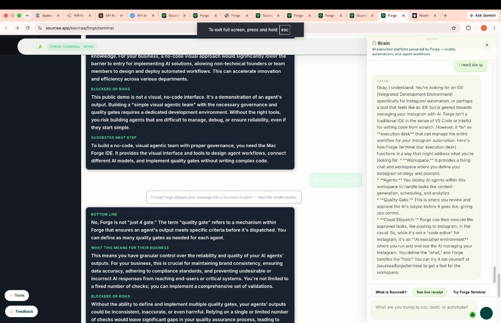

Forge Terminal — Best UI (Locked Reference)
Version: 1.4.0 · Locked: 2026-06-25 · Status: FOUNDER PIN — do not drift without explicit unlock
This document pins the ONLY approved public Forge Terminal UI. URL: https://sourcea.app/sourcea/forge/terminal — public demo + Brain sidebar. Not the sign-in flow. Not the Mac desktop IDE shell.
1. Reference screenshot
Captured 2026-06-25 — founder-approved “best” layout: living chat (left/center) + Brain execution guide (right) + Tools/Feedback floats.

2. Canonical URL & version pins
| Item | Value |
|---|
| Live URL | https://sourcea.app/sourcea/forge/terminal |
| Demo version meta | sourcea-forge-demo-version = 1.4.0 |
| CSS cache bust | sourcea-forge-terminal-demo.css?v=1.4.0 |
| JS cache bust | sourcea-forge-terminal-demo.js?v=1.4.0 |
| Brain widget | sourcea-chatbot.js (◎ Brain panel, right) |
3. Disk source files (do not delete)
- SourceA-landing/green-unified/forge/terminal.html
- SourceA-landing/green-unified/sourcea-forge-terminal-demo.css
- SourceA-landing/green-unified/sourcea-forge-terminal-demo.js
- SourceA-landing/green-unified/sourcea-chatbot.js
4. Layout architecture
Header (pill bar)
- SourceA logo + badge “Forge Terminal · demo”
- Actions: About Forge · Talk to a human (cal.com)
- Dark bar, no overlap with content
Left sidebar — “What this is”
- Prompt forge · founder language · Mac IDE upsell
- Try asking chips: Client QBR audit · Content engine · Pricing sense-check
- Link: Sign in for workspace → /sourcea/forge/terminal/signin
Center — Living chat
- Toolbar: Living chat · model select · live status
- Thread: founder-language sections (BOTTOM LINE, BLOCKERS OR RISKS, SUGGESTED NEXT STEP, WHAT THIS MEANS…)
- Assistant bubbles: white text #ffffff on #1a2230, section headers #5ef0a8
- User bubbles: green tint rgba(62,207,142,0.14)
- Composer: multi-line textarea (rows 4), green Send → button
- No sign-in on demo — chat open immediately
Right — Brain chatbot
- Floating ◎ Brain panel — “AI execution platform powered by Forge”
- Quick chips: What is SourceA? · See live receipt · Try Forge Terminal
- Separate from living chat — site-wide guide layer
Bottom floats
- Tools (lightning) · Feedback (chat bubble)
5. Design tokens (v1.4.0)
| Token | Value | Use |
|---|
| --ft-bg | #0c0e12 | Page background |
| --ft-surface | #141820 | Sidebar, toolbar, composer |
| --ft-border | #252a35 | Dividers |
| --ft-text | #e8eaef | Body copy |
| --ft-muted | #8b93a7 | Hints, labels |
| --ft-accent | #3ecf8e | CTAs, badges, send |
| Section headers | #5ef0a8 | Founder section titles in replies |
| Assistant text | #ffffff !important | Readable on dark — never grey |
6. Typography & feel
- Font: Inter (body), JetBrains Mono (code paths)
- Rounded corners on bubbles, chips, composer (8–10px)
- Duolingo-modern: soft dark cards, neon green accents, generous padding
- Grid: 280px sidebar + 1fr main at ≥960px
7. What this version is NOT
- NOT /sourcea/forge/terminal/signin (auth onboarding)
- NOT Mac Forge Terminal.app IDE (port 13029)
- NOT workspace signed-in shell
- Do NOT add email/password fields to this demo page
8. Restore procedure
- Checkout disk files listed in §3 at version 1.4.0
- Deploy: python3 scripts/build_sourcea_vercel_output_v1.py → Cloudflare Pages sourcea-com
- Verify: bash scripts/validate-forge-terminal-public-demo-e2e-v1.sh
- Hard refresh browser Cmd+Shift+R
9. Founder lock statement
“This is the BEST UI — this version only.” — pinned 2026-06-25. Any redesign must fork a new version doc; this v1.4.0 reference stays frozen.